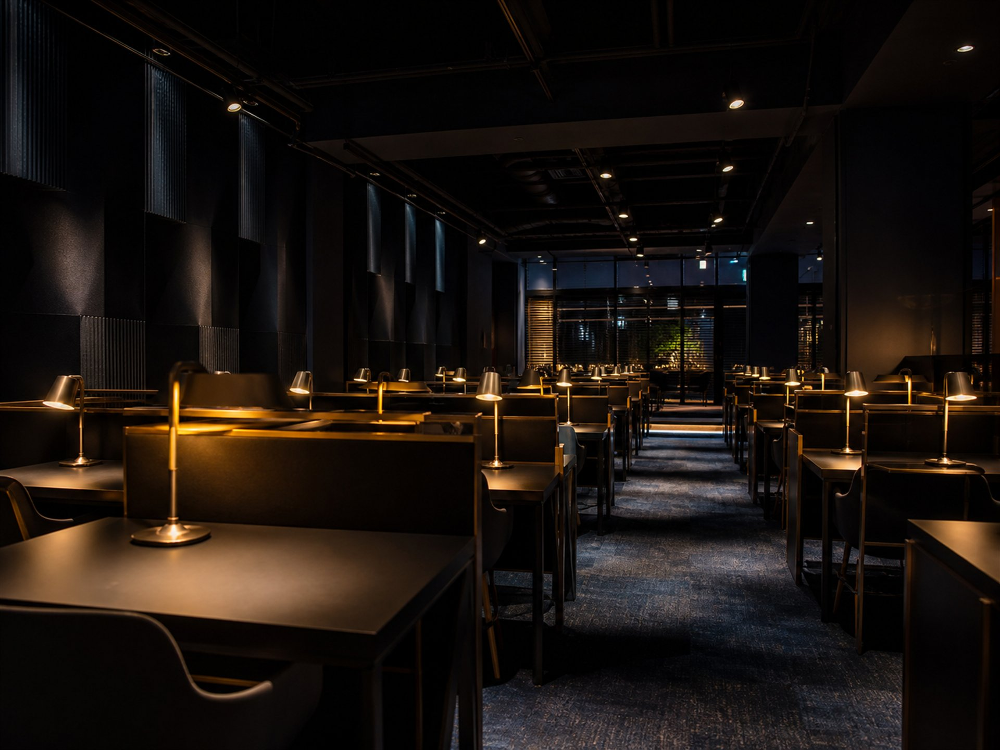

QUIET STUDY LIBRARY
아침책상은 도서관의 정숙함에 카페의 쾌적함을 더했습니다. 넓은 책상, 바른 의자, 그리고 조용함이라는 규칙.
38dB 평균 소음 (도서관 수준) · 5,500K 눈 편한 주광색 조명 · CO₂ 환기 자동 제어
MEMBERSHIP
FOR PARENTS
자녀가 입실하고 퇴실할 때마다 보호자 번호로 자동 발송됩니다.
이번 주 총 이용 시간을 매주 일요일 저녁에 보내드립니다.
21시 이후 퇴실 시 밝은 큰길 쪽 출구로 안내합니다.
본인이 원하면 입실 시 맡기고, 퇴실 때 찾아갑니다.
매일 06:00 – 24:00 · 관리자 상주 · 방문 상담 환영